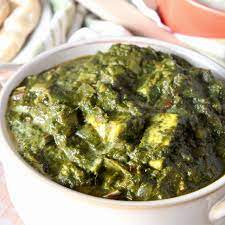

Prep time: 10 minutes
Cook time: 2 hours
Soak time: 8 hours
4 servings
Prep time: 10 minutes
Cook time: 2 hours
Soak time: 8 hours
4 servings

Prep time: 10 minutes
Cook time: 25 minutes
2 servings

Prep time: 5 minutes
Cook time: 25 minutes
4 servings

Prep time: 15 minutes
Cook time: 30 minutes
2-3 servings